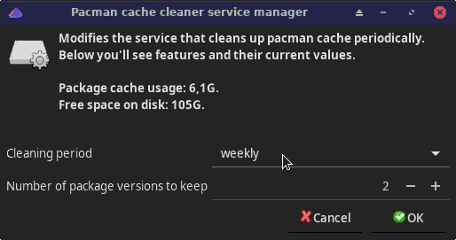

Tool to manage the paccache systemd service. Essentially the service prevents package cache size growing too much by setting a limit to how many old package versions are saved to the package cache.

paccache-service-manager
paccache(8)